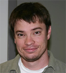

I am a Professor of Economics at Stony Brook University and a Research Associate at the NBER Economic Fluctuations and Growth (EFG) and Political Economy (POL) programs. I am also an affiliated member of the Stony Brook Center for Theory Center and Computer Science. I am ranked among the Top 5% Economists (last 10 years) by RePEc.
My main fields of study are Macroeconomics, Political Economy, and International Finance, with particular emphasis on dynamic public finance and the effects of polarization on the economy. My work has been published at the American Economic Review, the Journal of Economic Theory, the Journal of Monetary Economics, the International Economic Review, and the Review of Economic Dynamics, among other journals. I developed the “Partisan Conflict Index,” that tracks political disagreement among US politicians and it is currently published and updated monthly by the Real-Time Data Research Center at the Federal Reserve Bank of Philadelphia. It can also be obtained from Data Buffet (Moody’s Analytics) or from my website.
I am an Associate Editor of the Journal of the European Economic Association. I also serve as the Secretary for the Society for Economic Dynamics.
I was a Fellow of the Murray S. Johnson Chair in Economics and the Rex G. Baker, Jr., Professorship of Political Economy. I received a Dean’s Fellowship at the U. of Texas-Austin and was a visitor at the Cowles Foundation.
Before joining SBU, I worked as an Economic Advisor and Economist at the Federal Reserve Bank of Philadelphia, and an assistant professor at the Universities of Iowa and Texas-Austin. I was also a visiting scholar at the FR Banks of Richmond and Minneapolis, and the University of Pennsylvania. I received my PhD in Economics from the University of Rochester in 2004.
Gary Hansen is currently Professor and Chair of the Department of Economics at UCLA, and Research Associate at the National Bureau of Economic Research. His past appointments include a position at the University of California, Santa Barbara, and visiting positions at the University of Brasilia (Brazil) and the University of Pennsylvania. He has been at UCLA since 1987.
Professor Hansen received his Ph.D. from the University of Minnesota. His fields of concentration include macroeconomic theory and policy, monetary economics, and aggregate labor economics. He has received numerous honors, awards, and grants during his professional career, including a William Fulbright Award, and several National Science Foundation Grants, among others. His professional service includes current and previous editorships of many academic journals.
Professor Hansen’s seminal work is Indivisible Labor and the Business Cycle, originally printed in the Journal of Monetary Economics in 1985, and reprinted several times since. His most recent publications include Capacity Constraints, Asymmetries, and the Business Cycle, with Edward G. Prescott, published in the Review of Economic Dynamics in 2005, and Why Have Business Cycle Fluctuations Become Less Volatile? with Andre Arias and Lee Ohanian, published in Economic Theory in 2007.
Tim Kehoe is originally from Newport, Rhode Island. He received his B.A. in Economics and Mathematics from Providence College in 1975 and his Ph.D. in Economics from Yale University in 1979. He has held teaching positions at Wesleyan University, the Massachusetts Institute of Technology, and the University of Cambridge in the United Kingdom. Tim has been a professor in the Department of Economics at the University of Minnesota since 1987, where he is currently a Distinguished McKnight University Professor. In addition, he is an adviser to the Federal Reserve Bank of Minneapolis. His research and teaching focus on the theory and application of general equilibrium models, especially in macroeconomics and international trade.
Tim advised the Spanish government on the impact of joining the European Community in 1986 and the Mexican government on the impact of joining the North American Free Trade Area in 1994. In 1997, working with a team from the Mexican consulting firm SAI Derecho y Economía, he helped design a foreign trade and investment reform program for Panama. The Panamanian government enacted this program in 1998. Tim has held visiting professorships at many universities, including CEMFI, the Universidad de Alicante, the Universitat Autònoma de Barcelona, the Universitat de Barcelona, the University of California-Los Angeles, the Universidad Carlos III de Madrid, the Instituto Tecnológico Autónomo de México, the University of Maryland, El Colegio de México, the Norwegian School of Economics, the Universitat Pompeu Fabra, the Stockholm School of Economics, and Victoria University of Wellington. He has written over 120 books and scholarly articles and has supervised or co-supervised more than 100 Ph.D. theses in Economics. He has received numerous research grants and awards, including 9 multi-year grants from the National Science Foundation. In 2014, working with David Canning and David Bloom of the Harvard T. H. Chan School of Public Health and Juan Carlos Conesa of Stony Brook University, Tim received a five-year, four-million dollar grant from the National Institute on Aging of the National Institutes of Health. He serves on the boards of numerous educational and research institutions and professional journals, and he was elected President of Society for Economic Dynamics for 2015–2018 and President of the Society for the Advancement of Economic Theory for 2019.
Tim was made Doctor Honoris Causa by the Universidade de Vigo in 2008 and by the Universitat Autònona de Barcelona in 2016. He was elected a Fellow of the Econometric Society in 1991, Miembro de Honor of the Asociación Española de Economía in 2010, and Economic Theory Fellow of the Society for the Advancement of Economic Theory in 2011. He was named Scholar of the College of the College of Liberal Arts at the University of Minnesota 2005–2008, and he was awarded the College of Liberal Arts Dean’s Medal in 2013. In 2015, Tim received a Fellowship from the John Simon Guggenheim Memorial Foundation to write a book on the impact of foreign trade and investment liberalization focusing on the experience of Mexico. Tim is married to Jean O’Brien-Kehoe, a Distinguished McKnight University Professor of History at the University of Minnesota, who teaches American Indian History. They live on Nicollet Island in downtown Minneapolis.

José-Víctor Ríos-Rull received his Ph.D. in Economics from the University of Minnesota where he is currently the Carlson Professor of Economics.. Professor Ríos-Rull also served as Senior Economist at the Federal Reserve Bank of Minneapolis, and was Professor of Economics at the University of Pennsylvania. His research interests include macroeconomics with special concerns about heterogeneity and bankruptcy; demographics, specifically, family formation, aging, fertility, and their interplay with macroeconomics; and optimal policy without commitment.
Professor Ríos-Rull has advised graduate students at Carnegie Mellon University, Universidad Carlos III de Madrid, and Universitat Pompeu Fabra, in addition to students at the University of Pennsylvania. He has received numerous grants from the National Science Foundation, among other sources. He was elected a member of the Board of the Spanish Economic Association, and is Research Affiliate of the Center for European Policy Research, and Research Associate of the National Bureau of Economic Research Program on Economic Fluctuations and Growth. He is also a Senior Researcher at the Centro de Análisis y Estudios Ríos Perez, CAERP. His editorial activities include the Review of Economic Studies and the International Economic Review, among others.
Professor Ríos-Rull has had numerous publications in many academic journals. He has been a pioneer in the use of calibrated overlapping generations models for addressing important questions. His most notable publications in this area include Working in the Market, Home Production and the Acquisition of Skills: A General Equilibrium Approach (American Economics Review, 1993), and Vested Interests in a Positive Theory of Stagnation and Growth, joint with Per Krusell (Review of Economic Studies, 1996). His additional important work includes On the Size of the U.S. Government, joint with Per Krusell (American Economics Review, 1999); Capital-Skill Complementarity and Inequality, joint with Per Krusell, Lee Ohanian, and Giovanni L. Violante (Econometrica, 2000); and Accounting for Earnings and Wealth Inequality, joint with Ana Castañeda and Javier Díaz-Giménez (Journal of Political Economy, 2003).

Eric Young is Professor of Economics at the University of Virginia, where he has taught since 2004. He also currently holds the Qiushi Term Chair Professorship at Zhejiang University and the position of Senior Research Economist at the Federal Reserve Bank of Cleveland. Professor Young received his PhD from Carnegie Mellon University in 2001, and his research interests include the macroeconomics of inequality and information, optimal policy in small open economies, and consumer finance (especially bankruptcy). He serves as an Associate Editor for the Journal of Economic Dynamics and Control and Economics Letters and has been a consultant at the Federal Reserve Banks of Cleveland, Dallas, and Kansas City.
Recent examples of his work include “Capital Controls and Monetary Policy in Sudden-Stop Economies” with Mick Devereux and Changhua Yu (Journal of Monetary Economics), “Bankruptcy and Delinquency in a Model of Unsecured Debt” with Kartik Athreya, Juan Sanchez, and Xuan Tam (International Economic Review), and “Rational Inattention and Dynamics of Consumption and Wealth in General Equilibrium” with Yulei Luo, Jun Nie, and Gaowang Wang (Journal of Economic Theory).